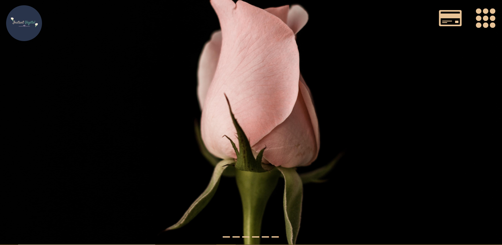
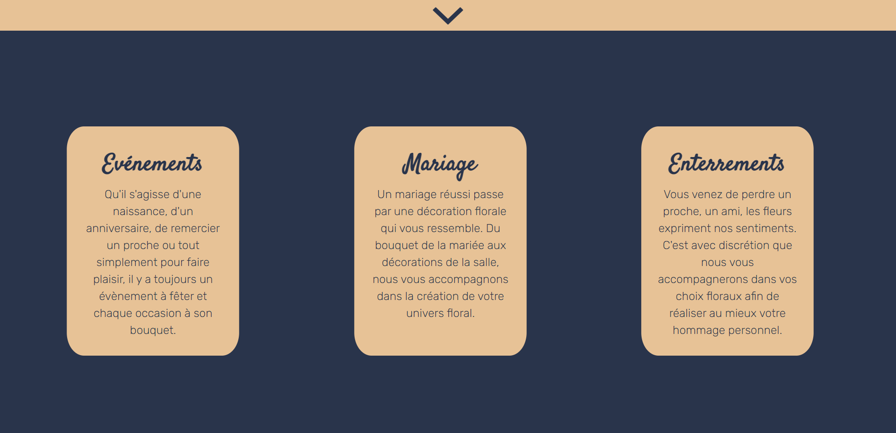
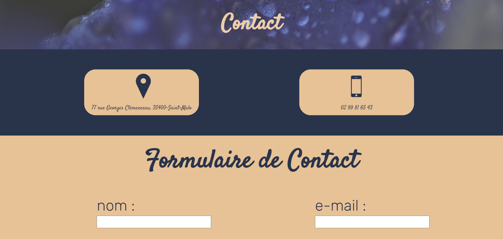
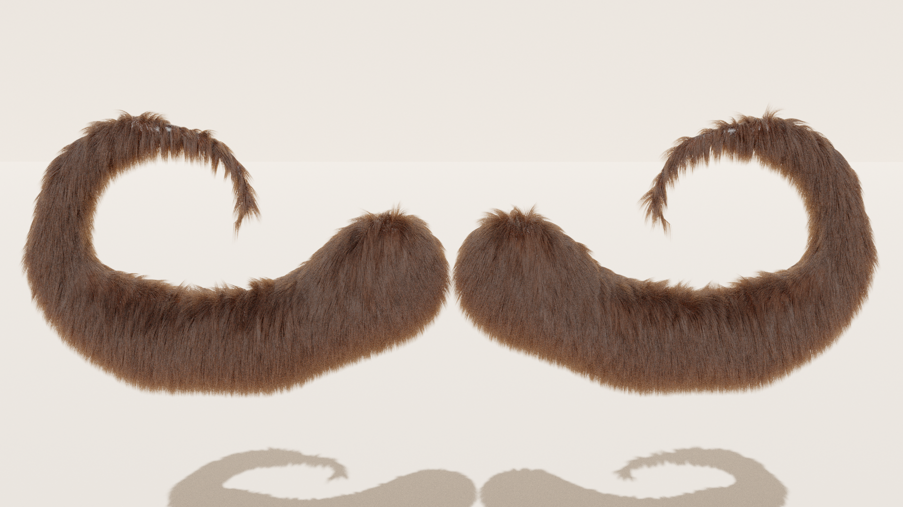

Formation
2020 / 2021
ENTREE A L'INSTITUT MARIE-THERESE SOLACROUP
pour laformation Tremplin Vers Le Numérique Diplome ANSSI “SecNumacadémie”
2017 / 2020
LYCEE HOTETIER YVON BOURGES – DINARD
Formation Santé Sécurité au Travail (SST) réalisée en février 2019
Brevet d’études professionnelles (BEP)
Baccalauréat professionnel cuisine, mention assez bien.
2017
COLLEGE LE BOCAGE – DINARD
Brevet des collèges, mention assez bien.
Expériences
Juillet.-Août-2020
Cours suivis sur le site OpenClassroom pour découvrir des
langages de programmation comme html5 et css3.
14 Janv.-21 Fév.-2020
Hôtel et restaurant gastronomique Les Grains d’Argent à Dizy (51530) (★★★)
Commis et remplaçant ponctuel chef de partie
5 Nov.-30 Nov. 2018
Restaurant
l’Abri Des Flots à Dinard (35800)
Commis polyvalent
4 Juin-6 Juillet 2018
Restaurant Arsaour Novotel à Dinard (35800) (★★★★)
Commis, seul en cuisine avec le Chef
4 au 20 Avril 2018
Hôtel Thalasso Novotel à Dinard (35800) (★★★★)
Commis à la cuisine du restaurant de la Thalasso
Mes Projets
Instant-Vegetal
- 
- 
- 
Blender
- 
A Propos
Je m’appelle Antoine Mounier, j’ai 18 ans. Actuellement en formation Tremplin Vers Le Numérique à l’Institut Marie Thérèse Solacroup à Dinard.